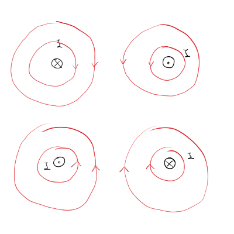

5. predavanje iz Elektromagnetnega polja
Table of Contents
- 1. Magnetostatika
1. Magnetostatika
1.1. Električni tok in velikosti
Električni tok je gibanje naboja po času vzdolž nekega električnega vodnika.
\[ I = \frac{\mathrm{d} e}{\mathrm{d} t}, \]
z enotami \( \mathrm{A} \) Amperov.
V magnetostatiki je električni tok časovno konstanten.
Nekaj velikosti tokov so
\[ \begin{array}{c|c} \hline \text{pojav} & \text{velikost} \\ \hline \text{tok skozi celično membrano} & 1-10 \mathrm{p A} \\ \text{živčni impulz} & 1 \mu \mathrm{A}\\ \text{gospodinjski tok} & 1 \mathrm{A} \\ \text{tok skozi superprevodni magnet v LHC} & 12 \mathrm{k A} \\ \text{tok pri blisku} & 1-20 \cdot 10^4 \mathrm{A} \\ \text{tok v Zemeljskem jedru} & 10^9 \mathrm{A} \\ \hline \end{array} \]
1.2. Gostota magnetnega toka
Podobno kot v elektrostatiki, lahko delovanje sil med električnimi vodniki opišemo z uvedbo magnetnega polja. Velja
\[ \vec{F} = - \frac{\mu_0 I_1 I_2}{4 \pi} \iint\limits_{}^{} \frac{\mathrm{d} \vec{l}_1 \times \mathrm{d} \vec{l}_2 \times \left( \vec{r} \left( l_2 \right) - \vec{r} \left( l_1 \right) \right)}{\left| \vec{r} \left( l_2 \right) - \vec{r} \left( l_1 \right) \right| ^3} = \int\limits_{c_1}^{} I_1 \, \mathrm{d} \vec{l}_1 \times \int\limits_{c_2}^{} \frac{\mu I_2}{4 \pi} \frac{\mathrm{d} \vec{l}_2 \times \left( \vec{r} (l_1) - \vec{r} (l_2) \right)}{\left| \vec{r}(l_1) - \vec{r}(l_2) \right| ^3} \]
Ločili smo integrala, ker prvi integral sporoča, da je sila na prvi vodnik, drugi integral pa je tok, ki ustvarja silo na prvi vodnik. Slednji integral uvedemo kot magnetno polje
\[ \vec{B} \left( \vec{r} \right) = \frac{\mu_0 I_2}{4 \pi} \int\limits_{c_2}^{} \frac{\mathrm{d} \vec{l}_2 \times \left( \vec{r} - \vec{r} (l_2) \right)}{\left| \vec{r} - \vec{r} (l_2) \right| ^3}. \]
Ta integral poznamo tudi pod imenom Biot-Savartov zakon. S tako uvedenim magnetnim poljem \( B \) zapišemo silo kot
\[ \vec{F} = \int\limits_{c_1}^{} I_1 \, \mathrm{d} \vec{l}_1 \times \vec{B} \left( \vec{r} (l_1) \right) \]
1.3. Velikosti magnetnega polja
\[ \begin{array}{c|c} \hline \text{pojav} & \text{velikost} \\ \hline \text{možganska aktivnost} & 1 \mathrm{fT} \\ \text{medgalaktična magnetna polja} & 1-10 \mathrm{pT}\\ \text{srčna aktivnost} & 100 \mathrm{pT} \\ \text{Zemeljsko magnetno polje} & 100 \mu \mathrm{T} \\ \text{železni magnet} & 100 \mathrm{mT} \\ \text{Sončne pege} & 1 \mathrm{T} \\ \text{pospeševalniki} & 10 \mathrm{T} \\ \text{nevronska zvezda} & 10^6 - 10^7 \mathrm{T} \\ \text{atomsko jedro} & 1 \mathrm{TT} \\ \hline \end{array} \]
1.4. Magnetne silnice
Magnetne silnice so vedno zaključene. Do tega spoznanja smo prišli eksperimentalno.

1.5. Magnetna cirkulacija
Magnetno cirkulacijo uvedemo kot
\[ \Gamma_M = \oint\limits_c^{} \vec{B} \cdot \mathrm{d} \vec{r}, \]
kjer je \( c \) zaključena zanka. Za razliko od električnega cirkulacije je ta integral striktno različen od \( 0 \). Integral po zaključeni zanki lahko preko Stokesovega izreka pretvorimo v integral po zaključeni površini
\[ \oint\limits_{c = \partial S}^{} \vec{B} \cdot \mathrm{d} \vec{r} = \iint\limits_S^{} \nabla \times \vec{B} \cdot \, \mathrm{d} \vec{S} \ne 0 \]
Iz tega sledi, da je
\[ \nabla \times \vec{B} \ne 0, \]
kar pomeni, da je magnetno polje vrtinčno.
1.6. Magnetni pretok
Magnetni pretok uvedemo kot
\[ \phi_M = \int\limits_S^{} \vec{B} \cdot \mathrm{d} \vec{S}, \]
kjer je \( S \) poljubna površina. Velja pa, da je magnetni pretok skozi zaključeno površino
\[ \oint\limits_S^{} \vec{B} \cdot \mathrm{d} \vec{S} = 0 \]
To je posledica tega, da ne obstajajo monopoli oziroma so vse magnetne silnice sklenjene. V diferencialni obliki pretok zapišemo
\[ 0 = \oint\limits_{S = \partial V}^{} \vec{B} \cdot \mathrm{d} \vec{S} = \int\limits_V^{} \nabla \cdot \vec{B} \, \mathrm{d} V = 0, \]
iz česar zaključimo, da je magnetno polje brezizvorno, saj
\[ \nabla \cdot \vec{B} = 0 \]
1.7. Gostota električnega toka
Električni tok, ki je vezan na žice, se posploši z uvedbo gostote električnega toka. In sicer
\[ I = \int\limits_S^{} \vec{\jmath} \cdot \mathrm{d} \vec{S} \]
Gostota električnega toka \( \vec{\jmath} \) ima lahko poljubno smer v prostoru in ni nujno vezan na vodnike - gostota toka ne teče nujno vzdolž žice in Zemljino jedro ni sestavljeno iz vodnikov.
1.8. Primeri gostote toka
1.8.1. Zvezno porazdeljen naboj
Imamo električen naboj z gostoto \( \rho \left( \vec{r} \right) \) in hitrostno polje \( \vec{v} \left( \vec{r} \right) \), ki poganja naboje. Izhajamo iz diferencialne oblike definicije gostote električnega toka
\[ \mathrm{d} I = \vec{\jmath} \cdot \mathrm{d} \vec{S} \]
Z upoštevanjem definicije toka lahko povežemo gostoto električnega toka s hitrostnim poljem
\[ \mathrm{d} I = \frac{\mathrm{d} e}{\mathrm{d} t} = \frac{\rho \mathrm{d} V}{\mathrm{d} t} = \frac{\rho \mathrm{d} S \mathrm{d} x}{\mathrm{d} t} = \rho \mathrm{d} S \vec{v} = \vec{\jmath} \mathrm{d} \vec{S}. \]
Torej je gostota električnega toka enaka
\[ \vec{\jmath} = \rho \vec{v} \]
1.8.2. Linearni vodnik
Gostoto električnega toka zapišemo kot
\[ \vec{\jmath} = I \delta ^2 \left( \vec{\rho} - \vec{\rho}_0 \right) \hat{t}, \]
kjer sta \( \vec{\rho} \) in \( \vec{\rho}_0 \) radij vektorja v 2D, pravokotna na enotski vektor \( \hat{t} \), ki kaže vzporedno z vodnikom.
1.8.3. Točkast naboj
Gostota električnega toka je
\[ \vec{\jmath} = e \delta ^2 \left( \vec{r} - \vec{r}_0 (t) \right) \vec{v}(t), \]
kjer je \( \vec{r}_{0} \) tir naboja, \( \vec{v} \) pa hitrost naboja.
1.8.4. Površinska gostota toka
\[ \vec{\jmath} \left( \vec{r} \right) = \sigma \cdot \vec{v} \delta \left( z - z_0 \right), \]
kjer je \( \sigma \) površinska gostota naboja in \( z_0 \) lega površine. Pogosto se označi tudi
\[ \vec{\jmath}_S = \sigma \vec{v}, \]
kjer je površinska gostota toka.
1.9. Amperov izrek
Imejmo tokovno zanko \( c' \), ki jo opisuje parametrizacija \( \vec{r} (l') \). Element zanke označimo z \( \mathrm{d} \vec{l} \, ' \). Predstavljajmo si (navidezno) zanko \( c \), ki objame dejansko tokovno zanko in jo opisuje krivulja s parametrizacijo \( \vec{r}(l) \). Majhen element virtualne zanke je opisan z \( \mathrm{d} \vec{l} \).
Zanima nas cirkulacija magnetnega polja po zanki \( c \). Uporabili bomo definicijo magnetne cirkulacije ter Biot-Savartov zakon
\[ \Gamma_M = \oint\limits_c^{} \vec{B} \cdot \mathrm{d} \vec{l} = \oint\limits_c^{} \left[ \frac{\mu_0 I}{4 \pi} \oint\limits_{c'}^{} \, \mathrm{d} \vec{l}\,' \times \frac{\left( \vec{r} (l) - \vec{r} (l') \right)}{\left| \vec{r} (l) - \vec{r} (l') \right| ^3} \right] \cdot \mathrm{d} \vec{l} \]
Ciklično smemo zamenjati vrstni red
\[ \Gamma_M = \oint\limits_{c}^{} \oint\limits_{c'}^{} \frac{\mu_0 I }{4 \pi} \left( \mathrm{d} \vec{l} \times \mathrm{d} \vec{l} \, ' \right) \cdot \frac{\vec{r} (l) - \vec{r} (l')}{\left| \vec{r} (l) - \vec{r} (l') \right| ^3}. \]
Z uvedbo posplošene površine \( \mathrm{d} S = \mathrm{d} \vec{l} \times \mathrm{d} \vec{l}' \) se integral prepiše v
\[ \Gamma_M = \frac{\mu_0 I}{4 \pi} \oint\limits_{S}^{} \mathrm{d} \vec{S} \cdot \frac{\left( \vec{r} (l) - \vec{r} (l') \right)}{\left| \vec{r} (l) - \vec{r} (l') \right|^3} \]
Vrednost integrala po uvedbi sferičnih koordinat je
\[ \Delta = \oint\limits_{S}^{} \, \mathrm{d} \Omega = 4\pi \]
iz česar tako sledi
\[ \Gamma_M = \mu_0 I, \]
kar je Amperov izrek. Magnetna cirkulacija je enaka zaobjemetemu električnemu toku.
Integral lahko preko Stokesovega izreka prepišemo v integral po površini
\begin{equation} \label{eq:1} \oint\limits_{\partial S = c}^{} \vec{B} \cdot \mathrm{d} \vec{r} = \int\limits_S^{} \nabla \times \vec{B} \, \mathrm{d} S \end{equation}Iz Amperovega zakona in \ref{eq:1} ter definicije gostote električnega toka dobimo enakost
\[ \int\limits_{}^{} \nabla \times \vec{B} \, \mathrm{d} \vec{S} = \mu_0 I = \mu_0 \int\limits_S^{} \vec{\jmath} \cdot \mathrm{d} \vec{S} \]
Torej velja
\[ \nabla \times \vec{B} = \mu_0 \vec{\jmath}, \]
kar je diferencialno obliko Amperovega zakona.
1.10. Magnetni potencial
Magnetno polje je vrtinčno, kar pomeni, da ga ne moremo zapisati s skalarnim potencialom. Vemo pa, da je \( \vec{B} \) brezizvorno \( \nabla \cdot \vec{B} = 0 \). Vemo pa, da je v splošnem
\[ \nabla \cdot \left( \nabla \times \vec{A} \right) = 0. \]
Zato uvedemo vektorski magnetni potencial kot
\[ \vec{B} = \nabla \times \vec{A}. \]
Magnetni pretok se tako zapiše
\begin{equation} \label{eq:3} \phi_M = \int\limits_S^{} \vec{B} \cdot \mathrm{d} \vec{S} = \int\limits_S^{} \left( \nabla \times \vec{A} \right) \, \mathrm{d} \vec{S} = \int\limits_{\partial S}^{} \vec{A} \, \mathrm{d} \vec{r} \end{equation}To naj nam bi pomagalo predstavljati vektorski potencial - je potencial, ki gre skozi površino zanke, kakor kaže zgornja enačba.
1.11. Vektorski potencial tuljave
Imamo tuljavo s premerom \( a \), po kateri teče tok \( I \). Znotraj tuljave se nam pojavi homogeno polje \( \vec{B}_0 \), medtem ko zunaj tuljave pa je \( \vec{B} = 0 \). Magnetno polje vektorsko zapišemo kot
\[ \vec{B}_0 \left( 0, 0, B_0 \right). \]
Da ima naše magnetno polje \( \vec{B}_0 \) takšne komponente in velja \( \vec{B}_0 = \nabla \times \vec{A} \), mora biti \( \vec{A} \) oblike
\begin{equation} \label{eq:2} \vec{A} = \frac{1}{2} \vec{B}_0 \times \vec{r}. \end{equation}Enačba \ref{eq:2} nam definira vektorski potencial znotraj tuljave.
Zunaj tuljave bi pričakovali, da je \( \vec{A} \) ničeln ali konstanten, saj je \( \vec{B} = 0 \).
Predstavljajmo si zanko, ki je tik ob zunanjem robu tuljave. Za to zanko bomo računali pretok skozi njo. Po definiciji magnetnega pretoka je
\[ \phi_M = \int\limits_S^{} \vec{B} \cdot \mathrm{d} \vec{S} = B_0 \pi a ^2 \]
Uporabimo enačbo \ref{eq:3}, in prepišemo magnetni pretok
\[ \phi_M = \int\limits_{\partial S}^{} \vec{A} \cdot \mathrm{d} \vec{r} \propto A_{zunaj} \cdot 2 \pi r_{zunaj}, \]
kjer je \( r_{zunaj} = a + \mathrm{d} r \). Iz tega lahko zaključimo, da \( \vec{A}_{zunaj} \ne 0 \).
Uganemo obliko \( \vec{A} \) zunaj tuljave kot
\[ \vec{A} = C \cdot \vec{B}_0 \times \frac{\vec{r}}{r ^2}. \]
Za to enačbo velja \( \nabla \times A = 0 \). Določimo \( C \), da je \( \vec{A} \) na meji med notranjostjo in zunanjostjo tuljave zvezen
\[ \oint\limits_{\partial S}^{}\vec{A} \cdot \mathrm{d} \vec{r} = \int\limits_{\partial S}^{} C \left( \vec{B}_0 \times \frac{\vec{r}}{r} \right) \, \mathrm{d} \vec{r} = 2\pi B_0 = \int\limits_S^{} \vec{B} \cdot \mathrm{d} \vec{S} = B_0 \pi a ^2 \]
Torej je konstanta \( C = \frac{a ^2}{2} \) in vektorski potencial je tako
\[ \vec{A} = \frac{a ^2}{2} \vec{B}_0 \times \frac{\vec{r}}{r ^2} \]
Tak \( \vec{A} \) je močno prostorsko odvisna funkcija, čeprav je \( \vec{B} = 0 \), vendar na meji je zvezen.